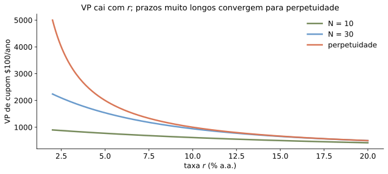
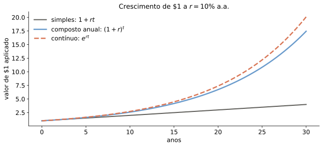
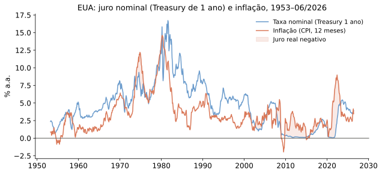
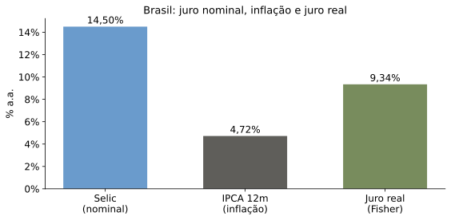
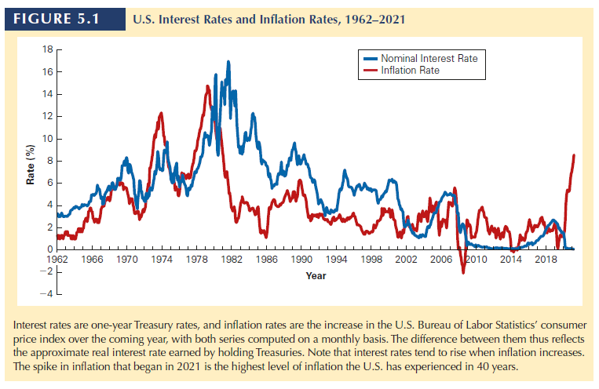
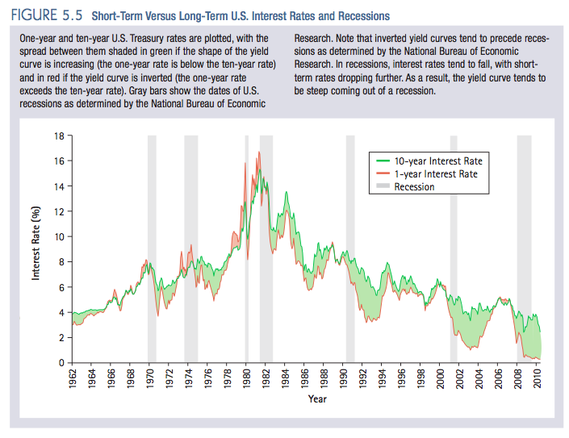

Ferramentas básicas para análise financeira
e o valor do dinheiro no tempo
O valor do dinheiro no tempo
Se uma firma gasta R$100 e recebe US$50 no mesmo dia, qual o resultado apurado? Houve ganho financeiro?
Naturalmente, para responder, é necessário saber a taxa de câmbio entre as duas moedas.
O mesmo vale para decisões intertemporais.
Taxa de juros faz o papel dessa taxa de conversão.
Para depois: No caso de incerteza, preços de estado ou taxa ajustada para risco.
Diagrama de Fluxo de Caixa
Um diagrama de fluxo de caixa é uma representação linear da cronologia dos fluxos de caixa esperados.
Auxilia na visualização de um problema financeiro.
Suponha que você esteja emprestando $10.000 hoje e que você será pago em duas parcelas anuais de $6.000.
Ano 1 Ano 2 Data 0 1 2 Fluxo de caixa −$10.000 $6.000 $6.000
Regras Básicas
Tabela 4.1 — As três regras da movimentação no tempo
Regra 1
Apenas valores no mesmo ponto no tempo podem ser comparados ou combinados.
Regra 2
Para movimentar um fluxo de caixa para um ponto no futuro, devemos compô-lo.
Valor futuro de um fluxo de caixa
\(\displaystyle FV_n = C \times (1+r)^n\)
Regra 3
Para movimentar um fluxo de caixa para um ponto no passado, devemos descontá-lo.
Valor presente de um fluxo de caixa
\(\displaystyle PV = C \div (1+r)^n = \frac{C}{(1+r)^n}\)
VPL e taxa de desconto

Quanto maior a taxa de desconto, menor o valor presente dos fluxos futuros.
Um problema simples
Suponha que planejemos aplicar $1.000 hoje e $1.000 no final de cada um dos dois próximos anos. Se obtivermos uma taxa de juros de 10% sobre nossa aplicação, quanto teremos daqui a três anos?
Diagrama:
0 1 2 3 $1.000 $1.000 $1.000 ?
Um problema simples [solução]
Suponha que planejemos aplicar $1.000 hoje e $1.000 no final de cada um dos dois próximos anos. Se obtivermos uma taxa de juros de 10% sobre nossa aplicação, quanto teremos daqui a três anos?
Solução:
0 1 2 3 $1.000 $1.000 $1.000 × 1,10 × 1,10 × 1,10 × 1,10 × 1,10 × 1,10 $1.331 $1.210 $1.100 $3.641
Linearidade do VP e FV
“Com base na primeira regra da movimentação no tempo podemos deduzir uma fórmula geral para avaliar uma sequência de fluxos de caixa: se quisermos encontrar o valor presente de uma sequência de fluxos de caixa, simplesmente somamos os valores presentes de cada fluxo de caixa.”
Tradução (na verdade, mais geral): \(PV\left\{ CF_{t}\right\} _{t=0}^{T}\) (e \(FV_{t}\left\{ CF_{t}\right\} _{t=0}^{T}\) ) são lineares.
Perpetuidades e anuidades
Dois ativos oferecem fluxos simples e têm VP fácil de calcular.
Bons atalhos para calcular VP de muitos outros ativos.
Perpetuidade
Título que paga cupom fixo a um intervalo determinado para sempre.
Raro na prática:
Reino Unido: “Consols”
Instrumento aceito para capital bancário de “tier 1”.
Normalmente, não são perpetuidades puras (porque são callable ).
Diagrama:
0 1 2 3 … C C C
Anuidade
Título que paga um cupom fixo até uma data determinada, quanto matura sem pagamento de um valor de face.
Diagrama:
0 1 2 N … C C C
Cálculo (supondo taxa constante \(r_{t}=r\) ):
\[PV=\sum_{t=1}^{N}\frac{C}{\left(1+r\right)^{t}}.\]
Cálculo
E maneira de lembrar
Soma telescópica da P.G. \(a_{n+1}=qa_{n}\)
\[\begin{aligned}
\left(1-q\right)\left(a_{1}+...+a_{N}\right) & =\left(a_{1}+a_{2}+...+a_{N}\right)\\
& \quad -\left(a_{2}+a_{3}+...+a_{N}q\right)\\
& =a_{1}-a_{N}q
\end{aligned}\]
Logo,
\[\sum_{n=1}^{N}a_{n}=\frac{a_{1}-a_{N}q}{1-q}\]
Derivação da fórmula da anuidade
Para anuidade,
\[a_{1}=\frac{C}{1+r};\quad a_{N}=\frac{C}{\left(1+r\right)^{n}};\quad q=\left(1+r\right)^{-1}\]
Logo,
\[PV_{anuid.}=\frac{C-C\left(1+r\right)^{-N}}{\left(1+r\right)-1}=\frac{C}{r}-\frac{C}{r\left(1+r\right)^{N}}\]
Cálculo (cont.)
\[PV_{anuid.}=\frac{C-C\left(1+r\right)^{-N}}{\left(1+r\right)-1}=\frac{C}{r}-\frac{C}{r\left(1+r\right)^{N}}\]
Para perpetuidade, basta tomar \(N\rightarrow\infty\) ,
\[PV_{perp.}=\frac{C}{r}\]
Outro truque, lembrando a fórmula da perpetuidade, a anuidade pode ser escrita como a diferença de duas perpetuidades.
Perpetuidade pode ser rara na prática, mas é útil como ferramentas para maturidades longas e possivelmente incertas.
Anuidade, perpetuidade e taxa de desconto

Com \(C=100\) e \(r=10\%\) , uma anuidade de 30 anos vale $942,69; a perpetuidade vale $1.000.
Composição de juros
Muitas vezes se lê algo como:
Juros de 6%a.a. compostos semestralmente.
O que isso quer dizer?
APR e composição mensal
Taxa percentual anual (APR, annual percent rate) é dada em termos de juros simples: 6%a.a. compostos mensalmente.
Logo, taxa ao mês é \(\frac{6\%}{12}=0{,}5\%\) .
Composição é mensal.
Dívida em \(n\) meses cresce com
\[\left(1+0{,}005\right)^{n}\]
Taxa efetiva anual (EAR) e composição contínua
Taxa efetiva anual (EAR), com composição em fração \(\frac{1}{n}\) no ano,
\[\left(1+\frac{APR}{n}\right)^{n}\]
\[\lim_{n\rightarrow\infty}\left(1+\frac{r}{n}\right)^{n}-1=e^{r}-1\]
Juros simples, compostos e contínuos
Em 30 anos: $1 vira $4,00 com juros simples, $17,45 com composição anual e $20,09 com composição contínua.
Taxas anuais efetivas para APR de 6%
Tabela 5.1 — Taxas anuais efetivas para uma APR de 6% com diferentes períodos de composição
Anual
\(\displaystyle (1+0{,}06/1)^1 - 1 = 6\%\)
Semestral
\(\displaystyle (1+0{,}06/2)^2 - 1 = 6{,}09\%\)
Mensal
\(\displaystyle (1+0{,}06/12)^{12} - 1 = 6{,}1678\%\)
Diário
\(\displaystyle (1+0{,}06/365)^{365} - 1 = 6{,}1831\%\)
Exemplo para discussão
Lembre-se de que, para tomar emprestado $250.000 com uma hipoteca de 30 anos a 12% a.a., o pagamento anual é de $31.037.
Suponha que o agente de crédito agora sugira a você que, ao invés de pagar uma taxa anual composta de 12%, seria mais conveniente e barato para você ter uma taxa mensal de 1%.
Como haverá 360 pagamentos, o pagamento mensal da hipoteca será de:
\[\frac{\$250.000}{\dfrac{1}{0{,}01}-\dfrac{1}{0{,}01(1+0{,}01)^{360}}}=\$2.572\]
O vendedor indica que seus pagamentos anuais seriam reduzidos de $31.037 para 12 × $2.572 = $30.864.
Isto é estranho, já que a taxa composta anual equivalente a 1% é:
\[(1+0{,}01)^{12}-1=12{,}68\%.\]
Link Calculadora. * fator na primeira linha foi aproximado para 8,055
Financiamento: Price × SAC

Price tem parcela fixa; SAC começa mais alto e cai ao longo do tempo.
Price × SAC: primeiros anos
0
1
R$ 40.359
R$ 50.833
R$ 239.641
R$ 229.167
1
2
R$ 40.359
R$ 48.333
R$ 228.038
R$ 208.333
2
3
R$ 40.359
R$ 45.833
R$ 215.044
R$ 187.500
3
4
R$ 40.359
R$ 43.333
R$ 200.490
R$ 166.667
4
5
R$ 40.359
R$ 40.833
R$ 184.190
R$ 145.833
5
6
R$ 40.359
R$ 38.333
R$ 165.933
R$ 125.000
Juros totais no exemplo: Price R$ 234.310; SAC R$ 195.000.
Taxas de juros
Distinguir:
Taxa nominal
Taxa real
Fluxos de caixa nominais, reais e qual taxa usar.
Relação
\[\left(1+r_{real}\right)=\frac{1+r_{nom}}{1+\pi}\implies r_{real}\approx r_{nom}-\pi\]
Brasil: taxa nominal, inflação e juro real

Fisher exato: 9,34%; aproximação \(r_{nom}-\pi\) : 9,78%.
Dados locais: Selic em 17/06/2026; IPCA 12m divulgado em 01/05/2026.
Taxas de juros
\[\left(1+r_{real}\right)=\frac{1+r_{nom}}{1+\pi}\implies r_{real}\approx r_{nom}-\pi\]

Curvas de juros
Na definição geral de VP, permitimos que as taxas \(r_{t}\) fossem distintas ao longo do tempo.
Em muitas aplicações, como no caso do cálculo do valor de perpetuidades e anuidades, simplificamos a análise impondo \(r_{t}=r\) para todo \(t\) .
No entanto, dependência da taxa de desconto no período de pagamento pode ser bastante importante em alguns momentos no tempo e aplicações particulares
Curva de juros
Fonte: Yahoo Finance via yfinance (^IRX, ^FVX, ^TNX, ^TYX), dados de 17/06/2026.
Curva invertida
Curva invertida, tipicamente, entendida como mau sinal.

Custo de oportunidade do capital
Curva descreve oportunidades alternativas de investimento.
E risco?
Apêndice: demonstração por L’Hôpital
Queremos calcular
\[L=\lim_{n\rightarrow\infty}\left(1+\frac{r}{n}\right)^{n}.\]
Faça \(x=1/n\) . Então \(x\rightarrow 0^+\) e
\[\ln L=\lim_{x\rightarrow 0^+}\frac{\ln(1+rx)}{x}.\]
O limite é do tipo \(0/0\) . Por L’Hôpital,
\[\ln L=\lim_{x\rightarrow 0^+}\frac{r/(1+rx)}{1}=r.\]
Logo, \(L=e^r\) e a taxa efetiva com composição contínua é
\[EAR_{cont}=e^r-1.\]